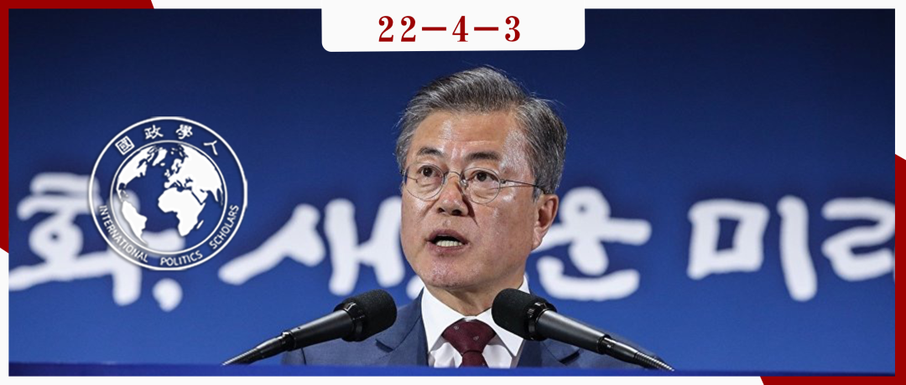

收录于合集

韩国总统议程的制定——
基于四届政府的比较研究
作者： Seonghyun Yu，高丽大学博士生；Jangho Park，首尔大学教授；Sunhyuk Kim，通讯作者，高丽大学教授。
编译： 刘培晨（国政学人编译员，中国人民大学国际关系硕士研究生）
来源： Yu, Seonghyun, Park, Jangho, & Kim, Sunhyuk (2020). The Making of Presidential Agendas in Korea: A Comparison of Four Governments. Korea Observer , 51(3): 365-389. DOI : 10.29152/KOIKS.2020.51.3.365

导读
本文以韩国的总统议程为研究主题，研究总统议程的形成因素。作者指出政党意识形态、总统领导力和社会环境是影响韩国总统议程的三大因素，并在文中详细比较比较了金大中 (1998-2003年)、卢武铉 (2003-2008年)、李明博 (2008-2013年) 和朴槿惠 (2013-2017年) 四届韩国政府的总统议程。
文章认为，一方面，这些总统议程结构稳定，包括愿景、目标、战略和具体行动项目，而且随着历届政府不断完善。另一方面，他们既有共同点，又有不同之处。分属不同派别的政府既有共性，即强调政府有效性、透明度和政府及公共部门问责制；又有个性，例如带有不同党派色彩的政府对于朝韩和平、经济议题关注度各有不同。
虽然本文确定了三个影响总统议程的要素，但是其分析还是重点在陈述各届政府的议程是什么，对政党意识形态、总统领导力和社会环境的分析仍有不足。
编译
01
总统议程
在韩国这类采用总统制宪政结构的国家，总统议程在国家治理和政策制定过程中至关重要，因为它是宣传现任政府当前政策重点和努力方向的有效方式。本文所称的总统议程是指由国家行政长官正式提出、包括短期和长期政策目标、能够突出国家面临的重要政策问题、确定其未来愿景的议程。
韩国历届政府都会选择正式颁布总统议程，并承诺在其执政期间落实。韩国总统议程的特征即在于其具有高度的连续性。本文所研究的四届政府的议程，尽管从理论上可以在任何时间以任何理由得到修改，其总体结构与内容在实践中却能够基本保持不变且得以系统地围绕10项以内的主要战略展开。这些战略基于一个国家总体口号之下，而该口号往往反映出本届政府所处时代的时代精神。
在韩国，总统议程大致按照如下顺序运行：（1）在总统选举后，成立总统换届委员会，确定相关政策问题的优先顺序，并向公众公布议程草案；当选总统会重新梳理其作出的选举承诺，并以标语形式形成一百余项总统议程；当然，在此期间总统换届委员会会与当选总统进行频繁互动。（2）在就职数月后，总统在听取公众对此前草案的意见后，将最终确定总统议程。（3）所有相关政府部门开始执行总统议程。总理办公室全面负责管理总统议程，包括监督和评估总统议程的执行情况。
02
影响总统议程形成的因素
影响总统议程形成主要有三大因素：政党意识形态、总统领导力与社会环境。上述三个因素相互关联影响着总统议程。
（1）政党意识形态
**
**
政党政治是规范公共辩论的最重要机制之一，也是公民意见影响决策过程的重要渠道之一，韩国总统议程受到该国政党政治的显著影响。
自 1987 年实施民主化以来，韩国占主导地位的几个政党主要可以划分为进步派和保守派。进步派倾向于自由主义，强调个人权利、言论自由和分配正义；而保守派更强调权威、秩序、稳定性与经济增长。进步派与保守派之间已多次实现权力交替，体现出韩国是一个稳定的民主国家。
总统与其政党的意识形态是影响韩国总统议程的重要因素，每届政府的总统议程在很大程度上反映了执政党的主导意识形态。
（2）总统领导力
**
**
作为影响总统议程的另一因素，总统领导力解释了一项议程如何有效发展为具体政策。作为政府运作的最高管理者，总统拥有最终的行政权力，所以总统在政策过程中拥有相当大的政治影响力。 总统可以在政策过程的议程设置阶段发挥主导作用，通过将注意力集中在特定议题领域而获得立法机构的更多支持。
总统议程象征着一届政府所设置的目标，旨在促进政策的积极变革。 总统议程可以被政府公职人员乃至所有公民作为模式与指南。通过展现领导力，总统可以动员观众引起关注并将正式议程转变为公共议程。 总统领导力包括总统的个人品质，例如个人魅力与信念等。
（3）社会环境
**
**
社会环境是影响总统议程形成的另一个重要因素。 政党意识形态和总统领导力并不独立于社会，它们反而与更广泛的社会进行互动。当各种社会问题涌现、引起公众关注并最终演变为公共政策议程时，这种社会环境会显著影响总统议程。社会环境的变化取决于地缘政治稳定性、经济波动和其他国内外情境。 例如，当朝鲜以导弹试验威胁韩国时，韩国的政治气候迅速变化，倾向于对朝鲜采取强硬政策。此外， 偶发的政治丑闻与政治事件会造成不利于特定政策倡议实施的社会环境。
03
四届韩国总统议程
（1）金大中政府（1998-2003年）
**
**
金大中政府的主要重点是经济和民主的并行发展，及时克服经济危机并巩固该国刚刚起步的民主。 因此，金大中在就职演说中强调需要彻底审视该国当前经济危机的根本原因。他强调了在经济和社会领域进行全面改革、重新配置政商关系以及消除过去威权主义遗留问题的重要性。
金大中政府的总统议程代表了总统议程制度的发展雏形。金大中政府采用了由几个“议程部门”组成的基本结构，认为总统议程是克服经济危机和促进民主的重要工具，要将健全的市场经济的发展与参与式民主结合起来。
构成金大中政府总统议程基础的三个关键概念包括：(1) 公民参与，(2) 民主和市场经济的并行推进，以及（3）为即将到来的 21 世纪信息社会做准备。金大中总统议程的四个主要领域是经济、行政、社会与文化、未来与统一。每个领域大约确定了十个核心战略或重点主题， 例如重组、改革、产业活力、政府作为公民的守护者、社区发展、健康与安全、环境与文化、21世纪以及半岛统一。
然后，在这些战略和主题下，金大中政府提出了一百个宏观议程、三百个中层议程和九百个具体行动议程。宏观层面的议程包括那些应该表明政府前进方向的大项目。中层议程更为实际， 如完善失业人员职业培训制度，在公共人事评价过程中实施绩效管理制度。 具体行动议程遍布整个总统议程，包括每个政府部门或部门每天负责执行的大量详细任务。
回顾三大影响总统议程的因素，社会环境是对金大中总统任期影响最大的因素，因为政府与公众都认为韩国急需从亚洲金融危机中复苏，并巩固刚刚起步的民主。 当然，这三个因素是密切相关的。 金大中政府（现代韩国历史上第一个进步派政府）和执政党的意识形态，表现出明显的倾向接触朝鲜和自由主义的特征，也为当时的总统议程做出了重大贡献，例如推动韩朝合作和“生产性福利”。
（2）卢武铉政府（2003-2008年）
**
**
卢武铉于2002年2月就任韩国新总统，在设计总统议程时，他调配了各类委员会和子委员会，它们分别负责管理某个决策阶段或某个议程部门。这一方法被其政治对手和保守媒体批评为 “委员会主义”。卢武铉在治理和决策中广泛使用委员会，旨在利用民间社会团体、民间专家和普通公民的参与并将参与制度化。各个委员会是横向组织的，旨在促进决策者之间的合作与协作。总统议程委员会的成立形成了一个连接总统、委员会本身和相关部门的三角结构，委员会负责议程制定的整个过程，规划、审查和执行任务。开放、横向连接的委员会极大地促进了公民参与和民主协商。 然而，政府委员会（和子委员会）的激增自然也有缺陷。其中最重要的缺陷在于由于行政问责的轨迹不明确，公众发现自己很难理解实际的决策过程，也很难确定总统议程的实际决策者。
卢武铉政府的总统议程系统体现出目标、原则和议程的复杂组合。 例如，在对朝政策方面，卢武铉在就职演说中强调东北亚的地缘政治优势以及朝鲜半岛和平与繁荣的必要性，因此他所创造的安全政策术语为“和平-繁荣政策”。此外， 卢武铉政府保持了相对精简的总统议程体系。卢武铉政府只有十二项宏观议程，下面包括约百个行动议程。
因为卢武铉政府的首要利益是社会正义、公平分配和参与式民主，所以政党意识形态是最重要的决定因素。 在就职大约八个月后，卢武铉从原有执政党中脱离出来，加入新政党。 但是，卢武铉的政治意识形态始终属于进步派——在韩国语境中代表着反对反共产主义，支持自由主义。此外，卢武铉的领导风格是影响其总统议程的另一重要因素。他的“服务型”领导风格在其推动“委员会主义”中尤为明显，在决策过程中广泛使用政府- 公民协商委员会， 设定目标以衡量议程绩效，并鼓励各行各业的公民积极参与政策进程，以培育政府与民间社会之间的合作关系。
（3）李明博政府（2008-2013年）
**
**
李明博政府的总统议程符合其新自由主义的执政理念，强调以绩效为中心的政策评估，将可行性和可管理性放在首位，凸显了 总统对“实用主义”治国的坚持。
李明博政府的总统议程包括五项主要行政方针，每项方针下包括四项战略，而每项战略下包括五项总统议程，最终李明博政府在100项总统议程总共划分出了 949个具体议程。相比上任政府，李明博政府不仅大幅增加议程数量，而且更为系统化，并且强调结果导向、实用性、公开批评、灵活性与多维度解决问题这五项原则。
此外，这些指导方针下的战略和议程都清晰地写明了目标、具体时间表（包含截止日期）和负责部门，极易让民众理解。为了更有效地监督总统议程，李明博政府试图精简和改进现有的议程管理系统。
然而，李明博上任后，政治局势对其不利。2008年，公众反对政府在贸易谈判中对美国让步增加美国牛肉的进口，这导致总统的支持率直线下降。韩国公众特别批评总统在制定政策时缺乏与公众的沟通和互动。李明博不得不对总统议程进行重大修改，提出了四个新的行政理念，分别为绿色增长、亲民和兼收并蓄的实用主义、公平社会与和谐社会。这四个理念成为其总统议程的核心一直延续到任期结束。
总的来说，李明博政府的总统议程受到社会环境的极大影响，主要包括全球金融危机的冲击、针对“疯牛病”和其他政策问题的公众抗议。李明博在其任期内受到舆论的极大牵制，而公众舆论本身就是社会环境中最关键的因素之一。不可否认的是，总统及执政党的意识形态对总统议程产生重要影响，导致政府最高目标是支持经济增长而不是公平分配。
（4）朴槿惠政府（2013-2017年）
继李明博政府之后，朴槿惠政府继续将总统议程系统化、复杂化。与历届政府相比，朴槿惠的总统议程体系更加完善。朴槿惠政府的优势在于，总统会在演讲或新闻中经常使用一些引人注目的关键词，而这些关键词增加了公众对政府有意推动的议程的认识。
朴槿惠政府的总统议程包含四个层次：国家愿景、政策主题、驱动战略和具体议程任务。首先，其国家愿景为“开创希望的新时代”，口号为“实现国家发展与国民幸福的良性循环”。其次，其四项议程主题包括经济振兴、人民幸福、文化丰富与建设和平统一的基础。第三，其将十四条驱动战略作为指导具体议程的路线图。最后，其在驱动战略下总计列出 600 项具体议程。驱动策略下的议程数量大约每年变化一次。
2013年，总理办公室引入“红绿灯系统”管理总统议程。绿灯的议程意味着进展顺利；黄灯表示遇阻；红灯表明严重遇阻。2013年7月，在140个总统议程中，131项为绿灯，9 项为黄灯，无红灯项目。
影响这届总统议程的主要因素为总统及执政党的意识形态。然而，朴槿惠政府的主要贡献不在于总统议程的实际进展，而是对议程体系的完善。朴槿惠的总统领导力相对较弱，其领导力深受“沉船事件”和“闺蜜门”的影响。执政党的保守意识形态是总统议程的决定因素，促使其政府专注于振兴经济。至少在朴槿惠执政之初处，大多数公众要求经济复苏，这种社会环境提振了她的政党意识形态。
04
结论
自1998年以来，历届韩国政府都正式制定、宣布和实施了不同的总统议程，这些议程受到政党意识形态、总统领导力和社会环境的不同影响。 总统议程设置的结构和内容也有相当大的连续性。 首先， 所有总统议程都是由愿景、目标、战略和具体行动项目组成的垂直组织结构。 所有政府都努力管理、实施总统议程，不断完善总统议程体系，巩固总统议程在公共行政和政策制定中的地位。其次， 就总统议程的内容而言，分属不同派别的政府存在某些共性， 例如进步派政府强调朝韩的和平，而保守派政府强调经济增长。 带有不同意识形态色彩的韩国政府的总统议程都普遍强调了政府的有效性、透明度和政府及公共部门问责制。 得益于这种连续性，总统议程体系在韩国进步派和保守派政府的交替中保持了一定的稳定性。
词汇整理
总统议程 presidential agenda
生产性福利 productive welfare
实用主义 pragmatism
服务型领导 servant leadership
审校 | 程朵依 阮辰阳
排版 | 黄紫蓝 廉梦瑶
文章观点不代表本平台观点，本平台评译分享的文章均出于专业学习之用, 不以任何盈利为目的，内容主要呈现对原文的介绍，原文内容请通过各高校购买的数据库自行下载。

国政学人
支持学术公益与知识传播
微信扫一扫赞赏作者 __赞赏
已喜欢，对作者说句悄悄话
取消 __
发送给作者
发送
最多40字，当前共字
上一页 1/3 下一页
长按二维码向我转账
支持学术公益与知识传播
受苹果公司新规定影响，微信 iOS 版的赞赏功能被关闭，可通过二维码转账支持公众号。